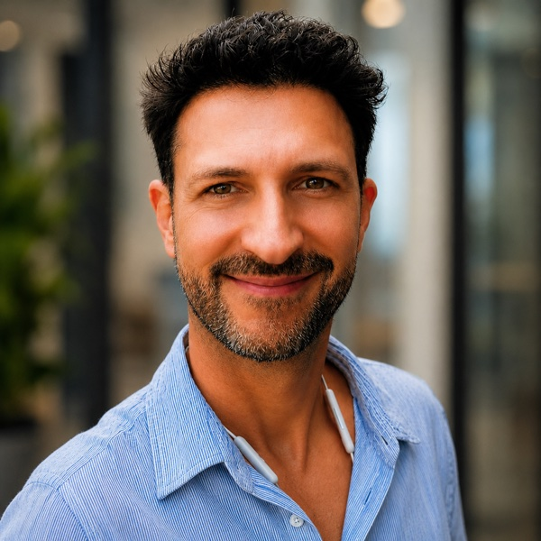

AI, machine learning, and NLP for finance
- Full IVADO Professor, Department of Decision Sciences, HEC Montréal
- Director, MSc in Financial Engineering
- Associate Editor, International Journal of Forecasting, Journal of Statistical Software, R Journal
- Fellow, Institut Louis Bachelier
About
I'm a quant at heart. I build methods that turn messy data — prices, news, filings, anything written down — into signals for risk, portfolios, and the economy. Financial econometrics is my home base; artificial intelligence, machine learning, and natural language processing are how I get there. Above all, I like working with people — co-authors, postdocs, and students. That part matters to me as much as the results.
I've been shipping open-source code for twenty years. With my team I maintain a dozen R packages on CRAN — GARCH and regime-switching models, risk-based portfolios, textual sentiment, global optimization — because a method nobody can run is a method that doesn't exist. I'm also active in Sentometrics Research, bridging text mining, sentiment analysis, and econometrics, and FAME, a joint Paris Dauphine–PSL and HEC Montréal initiative on generative AI and large language models in financial markets.
If you like clicking links, here is the institutional trail: I am an elected member of the ISI, a member or researcher at CIRANO, CIREQ, CRM, Fin-ML, GERAD, OBVIA, the Penner Institute, and Quantact, and an instructor at DataCamp.
Selected publications
- Efficient estimation of bid-ask spreads from open, high, low, and close prices, Journal of Financial Economics 2024, with Guidotti & Kroencke [Code/Data]
- Is it alpha or beta? Decomposing hedge fund returns when models are misspecified, Journal of Financial Economics 2024, with Barras, Scaillet & Gagligardini [Code]
- Linking frequentist and Bayesian change-point methods, Journal of Business & Economic Statistics 2024, with Dufays & Ordas
- Climate change concerns and the performance of green versus brown stocks, Management Science 2023, with Bluteau, Boudt & Inghelbrecht [Data]
- Media abnormal tone, earnings announcements, and the stock market, Journal of Financial Markets 2022, with Bluteau & Boudt
- The peer performance ratios of hedge funds, Journal of Banking & Finance 2017, with Boudt [Code]
For the complete list of publications and working papers, see the Research page.